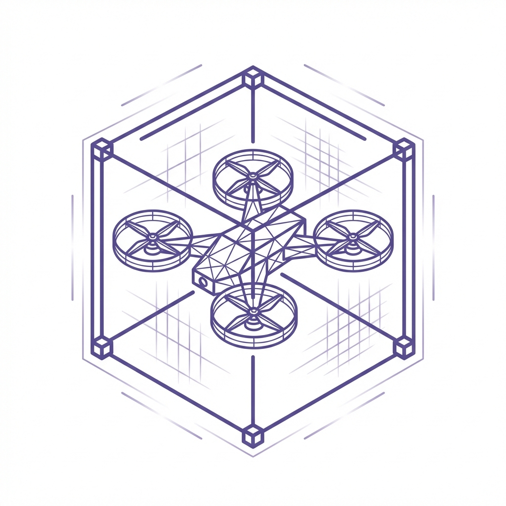

Unidad de Computación, Teledetección y modelado 3D del CISPAC
CISPAC 3D LAB
Esta nueva unidad, innovadora y multidisciplinar, dota al CISPAC de tecnología avanzada y abordar retos complejos en las áreas de la Arqueología, Geografía, Geología, Historia, Economía rural y Agroecología, respondiendo a las necesidades de la investigación actual. El laboratorio cuenta con equipos de última generación, incluyendo, entre otros, un hub de ordenadores de alto rendimiento, georradar, dron LiDAR, varios escáneres láser (corto y largo alcance), área de fotografía arqueológica e impresión 3D.
Financiación
La creación de este laboratorio de investigación ha sido posible gracias a la financiación del Ministerio de Ciencia, Innovación y Universidades y de la Agencia Estatal de Investigación (AEI), a través de las Ayudas para la adquisición de equipamiento científico-técnico, correspondientes al Subprograma Estatal de Infraestructuras y Equipamiento Científico-Técnico del Programa Estatal para Impulsar la Investigación Científico-Técnica y su Transferencia, en el marco del Plan Estatal de Investigación Científica y Técnica y de Innovación 2021-2023.
Proyecto: EQC2024-008629-P
Convocatoria: Ayudas para la adquisición de equipamiento científico-técnico 2024 (AEI).